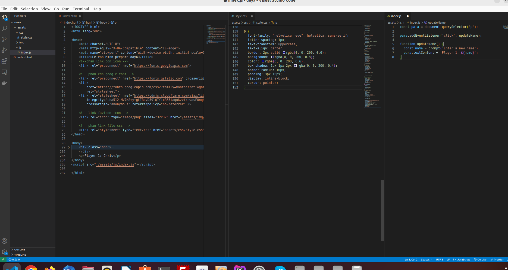
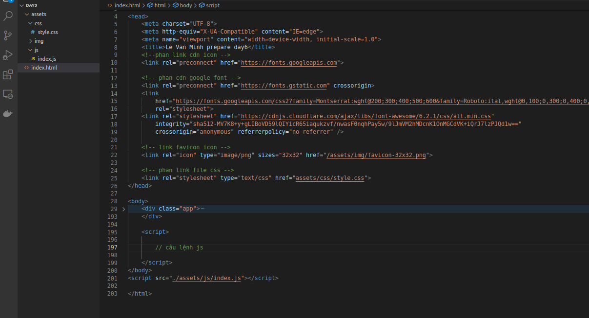
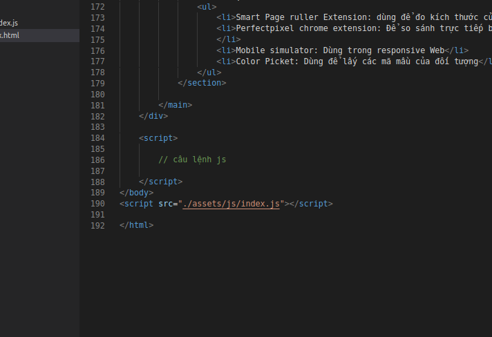
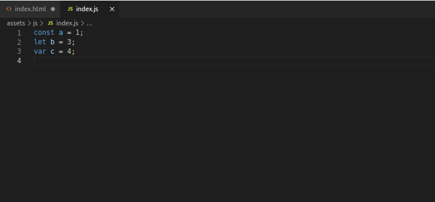

Day 9: Javascript cơ bản
I. Tìm hiểu về Javascript
-
Khái niệm
Là moortj ngôn ngữ lập trình cho phép triển khai các chức năng phức tạp của trang web như tính tương tác phức tạp hay các chuyển động phức tạp
-
Có thể hiểu
HTML: Phản ánh nội dung của trang củaCSS: Tạo style cho nội dung của trang webJavascript:ngôn ngữ kịch bản cho phép bạn tạo nội dung cập nhật động, kiểm soát đa phương tiện, tạo hiệu ứng hình ảnh và gần như mọi thứ khác. (Được rồi, không phải tất cả, nhưng thật tuyệt vời với những gì bạn có thể đạt được chỉ với một vài dòng mã JavaScript.)- Ví dụng 
II. Cách nhúng js trong trang web
-
Viết các câu lệnh js trong cặp thẻ
script, đặt nó ở trong dưới cặp thẻheadhoặc để cuối cặp thẻbody
Ví dụ
 - Link từ file js bên ngoài bằng cặp thẻ
script và đường dẫn đến file js Ví dụ
III. Các kiểu dữ liệu js
-
Nguyên thủy
- Boolean
- Number
- String
- BigInt
- Symbol
- Null
- Undefined
-
Nâng cao
- Object
-
Toán tử số học
-
Toán tử so sánh (hoặc quan hệ)
-
Toán tử bit
-
Toán tử logic
-
Toán tử gán
- Các toán tử đặc biệt
-
Khái niệm
Giống như nhiều ngôn ngữ lập trình khác, JavaScript có các biến. Các biến có thể được coi là các thùng chứa có tên. Bạn có thể đặt dữ liệu vào các vùng chứa này và sau đó tham khảo dữ liệu chỉ bằng cách đặt tên vùng chứa.
-
Khai báo
-
const được sử dụng để khai báo 1 hằng số, và giá trị của nó không thay đổi
trong suốt chương trình.
- let khai báo biến chỉ có thể truy cập được trong block bao quanh nó được xác định bằng cặp {}.
- var khai báo biến có thể truy cập ở phạm vi hàm số hoặc bên ngoài hàm số, toàn cục.
Ví dụ
 -
const được sử dụng để khai báo 1 hằng số, và giá trị của nó không thay đổi
trong suốt chương trình.